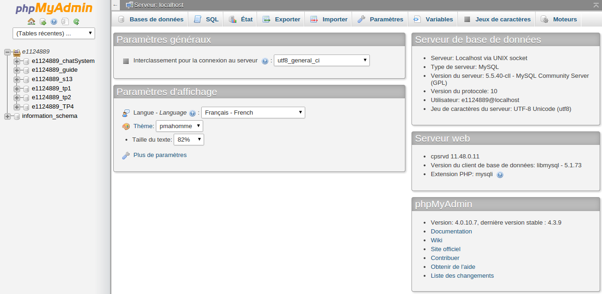

J'expliquerai ici étape par étape comment créer un système de messagerie instantané en Ajax.
Il est nécessaire d'avoir quelques base en HTML/PHP/AJAX ainsi que d'être capable de toucher un peu à une base de donnée pour bien comprendre le tutoriel, mais tout sera très bien expliqué étape par étape.
Cliquez ici pour voir le résultat final
Télécharger fichier départ Télécharger fichier finalVous pouvez tout d'abord récupérer le fichier de départ avec tout les fichiers nécessaire dans la bonne hiérarchie. Voici une image du dossier complet.
Le dossier css contient seulement deux fichiers css vide. Le dossier img est vide. Le dossier JS contient un fichier Script vide ainsi que un plugin nécessaire pour le système. Le dossier php est le plus remplis. Il contient un fichier ajax.php vide ainsi que un dossier contenant 5 fichiers PHP vide.
Voici les fichiers contenus dans le dossier PHP.
Nous allons commencer par remplir le fichier HTML 'ajax-chat.html' comme suit:
<!DOCTYPE html> <html> <head> <meta http-equiv="Content-Type" content="text/html; charset=utf-8" /> <title></title> <link rel="stylesheet" type="text/css" href="js/jScrollPane/jScrollPane.css" /> <link rel="stylesheet" type="text/css" href="css/page.css" /> <link rel="stylesheet" type="text/css" href="css/chat.css" /> </head> <body> <div id="loginPage"> <h2 class='titreLogin'>FOU MESSENGER DE FEU</h2> <form id="loginForm" method="post" action=""> <input id="name" name="name" class="rounded" maxlength="16" /> <input id="email" name="email" class="rounded" /> <input type="submit" class="blueButton1" value="Login" /> </form> <p class='version'>Version BETA 1.0</p> </div> <div id="chatContainer"> <div id="chatTopBar" class="rounded"></div> <div id="chatLineHolder"></div> <div id="chatBottomBar" class="rounded"> <div class="tip"></div> <form id="submitForm" method="post" action=""> <div class="buttonSend"> <input type="submit" class="blueButton" value="Envoyer" /> </div> <input id="chatText" name="chatText" class="rounded" maxlength="255" /> </form> </div> </div> <div id="chatUsers" class="rounded"> </div> <script src="http://ajax.googleapis.com/ajax/libs/jquery/1.4.2/jquery.min.js"></script> <script src="js/jScrollPane/jquery.mousewheel.js"></script> <script src="js/jScrollPane/jScrollPane.min.js"></script> <script src="js/script.js"></script> <script src="js/script2.js"></script> </body> </html>
Nous allons maintenant nous occuper des deux fichiers CSS relié au HTML
Commencons par 'page.css' :
*{ margin:0; padding:0; } body{ color:#eee; background:url('../img/page_bg.jpg') repeat-x #323232; font:15px Calibri,Arial,sans-serif; border-top:5px solid #212121; } #footer{ background-color:#212121; position:fixed; width:100%; height:70px; bottom:0; left:0; } a.tzine,a.tzine:visited{ background:url("../img/tzine.png") no-repeat right top; border:none; color:#FCFCFC; font-size:12px; height:70px; left:50%; line-height:31px; margin:23px 0 0 110px; position:absolute; top:0; width:290px; } .tri{ border-color:transparent transparent #212121; border-style:solid; border-width:20px 17px; height:0; left:50%; margin:-40px 0 0 -400px; position:absolute; top:0; width:0; } h1{ font-size:20px; font-weight:normal; left:50%; margin-left:-400px; padding:25px 0; position:absolute; width:480px; } a, a:visited { text-decoration:none; outline:none; border-bottom:1px dotted #97cae6; color:#97cae6; } a:hover{ border-bottom:1px dashed transparent; } .clear{ clear:both; }
Maintenant 'chat.css' :
body{ height:100%; width:100%; } #loginPage{ position:absolute; top:0; width:100%; height:100%; background-color:white; display:block; z-index:100; } #loginForm{ width:40%; left:30%; top:15%; position:relative; } #loginForm input{ width:100%; padding:10px 5px; margin:5px 0; } .titreLogin{ width:100%; text-align:center; color:black; padding-top:150px; } .version{ color:black; width:100%; text-align:center; margin-top:20%; } .blueButton1{ width:50%!important; margin-left:27%!important; } #chatErrorMessage{ position:absolute; z-index:150; color:red; top:10px; width:100%; text-align:center; font-size:1.5em; } /* Conteneur chat principal */ #chatContainer{ width:79%; height:100%; float:left; } /* Barre du haut */ #chatTopBar{ height:20px; background-color:rgba(255,255,255,0.9); padding:10px 0 10px 0; color:#777; text-shadow:1px 1px 0 #FFFFFF; border-radius:5px; } #chatTopBar .name{ margin-left:2%; font-weight:bold; } #chatTopBar img{ margin-left:2%; float:left; border-radius:50px; } .logoutButton{ float:right; padding:0 2% 0 0; text-decoration:none; border:0px; color:gray!important; } /* Chats */ .noChats{ padding:15px 2%; } #chatLineHolder{ min-height:500px; height:100%; width:100%; margin-bottom:20px; overflow:hidden; } .chat{ padding:10px 10% 10px 0; color:white; position:relative; width:90%; position:relative; border-bottom:1px solid rgba(255,255,255,0.3); overflow:hidden; } .chat .gravatar{ background:url('http://www.gravatar.com/avatar/ad516503a11cd5ca435acc9bb6523536?size=23') no-repeat; height:100%; width:50px; height:50px; float:left; margin:0 5% 0 2%; border-radius:50px; } .chat .gravatar img{ width:50px; height:50px; visibility:hidden; border-radius:50px; } .chat .author{ float:left; margin-right:10px; font-weight:bold; font-size:1.4em; } .chat .text{ width:100%; font-size:1.2em; display:block; } .chat .text p{ width:84%; height:100%; overflow:hidden; float:left; word-wrap: break-word; margin-top:3px; } .chat .time{ float:left; font-size:0.9em; margin-top:9px; margin-left:12.5%; width:80%; } .chat:last-child{ margin-bottom:0; } .chat img{ visibility:hidden; margin:0; } /* Zone utilisateur du chat */ #chatUsers{ background-color:#202020; border:1px solid #111111; height:100%; min-height:620px; width:20%; float:left; position:relative; border-radius:5px; } #chatUsers .user{ background:url('http://www.gravatar.com/avatar/ad516503a11cd5ca435acc9bb6523536?size=30') no-repeat 1px 1px #444444; border:1px solid #111111; float:left; height:32px; margin:10px 0 0 10px; width:32px; } .count{ position:absolute; width:100%; text-align:center; padding:10px 0 5px 0; bottom:10px; border-top:1px solid rgba(255,255,255,0.4); } #chatUsers .user img{ border:1px solid #444444; display:block; visibility:hidden; } /* Barre du bas */ #chatBottomBar{ padding:10px; border:1px solid rgba(255,255,255,0.5); border-radius:5px; overflow:hidden; } #chatBottomBar .tip{ position:absolute; width:0; height:0; border:10px solid transparent; border-bottom-color:#eeeeee; top:-20px; left:20px; } #chatText{ width:76%; padding:10px 2%; border-radius:5px; float:left; opacity:0.7; -webkit-transition:all 0.5s ease-in-out; -moz-transition:all 0.5s ease-in-out; -o-transition:all 0.5s ease-in-out; -ms-transition: all 0.5s ease; transition:all 0.5s ease-i } #chatText:focus{ opacity:1; -webkit-transition:all 0.5s ease-in-out; -moz-transition:all 0.5s ease-in-out; -o-transition:all 0.5s ease-in-out; -ms-transition: all 0.5s ease; transition:all 0.5s ease-i } #submitForm{ display:none; } /* Modifie le style de JScrollPane */ .jspVerticalBar{ background:none; width:20px; } .jspHorizontalBar{ display:none; height:0px; } .jspTrack{ background-color:#202020; border:1px solid #111111; width:3px; right:-10px; } .jspDrag { background:url('../img/slider.png') no-repeat; width:20px; left:-9px; height:20px !important; margin-top:-5px; } .jspDrag:hover{ background-position:left bottom; } /* Style additionnel */ .buttonSend{ float:left; background-color:white; width:15%; height:20px; border:0px; border-radius:5px; margin-right:3%; opacity:0.8; -webkit-transition:all 0.5s ease-in-out; -moz-transition:all 0.5s ease-in-out; -o-transition:all 0.5s ease-in-out; -ms-transition: all 0.5s ease; transition:all 0.5s ease-in-out; } .buttonSend:hover{ opacity:1; -webkit-transition:all 0.5s ease-in-out; -moz-transition:all 0.5s ease-in-out; -o-transition:all 0.5s ease-in-out; -ms-transition: all 0.5s ease; transition:all 0.5s ease-in-out; } #chatContainer .blueButton{ border:none !important; color:#516D7F !important; display:inline-block; font-size:13px; height:35px; width:100%; text-align:center; margin:0; cursor:pointer; float:left; border-radius:5px; } #chatContainer .blueButton:hover{ background-position:left bottom; }
Vous devriez maintenant avoir une page semblable à ça :
Nous allons maintenant créer la base de donnée.
Si vous utilisez cPanel l'interface auras l'aire de ceci :
Vous pouvez maintenant vous diriger dans votre base de donnée MySql ou autre en appuyant sur le bouton Base de données MySQL :
Vous devriez arriver dans un interface ressemblant à ceci :
Vous pouvez maintenant créer votre base de donnée du nom que vous désirez ici :
Vous devez maintenant créer un utilisateur ici :
Vous devez maintenant associer l'utilisateur que vous venez de créer avec la base de donnée que vous venez de créer ici :
Vous pouvez maintenant vous diriger dans votre PHP MyAdmin ou autre en appuyant sur le bouton PHP MyAdmin :
Vous devriez maintenant être dans un interface ressemblant à ceci :
Vous pouvez maintenant sélectionner la base de donnée que vous avez crée dans le menu de gauche :
Pour vous facilitez la vie j'ai créer un fichier pour construire automatiquement les tables nécessaires. Vous n'avez qu'à appuyer sur le bouton importer et sélectionner le fichier tables.sql à la racine du dossier de départ.
Nous allons maintenant commencer à remplir les fichiers PHP
Si vous voulez des explications étape par étape de chaque fichier PHP vous pouvez appuyez sur le lien du fichier que vous voulez voir ici :
Sinon voici le code pour chaque fichier php:
'ajax.php' :
/* Configuration de la base de donnée */ $dbOptions = array( 'db_host' => 'Votre Host', 'db_user' => 'Votre Utilisateur', 'db_pass' => 'Votre mot de passe utilisateur', 'db_name' => 'Votre nom de base de donnée' ); error_reporting(E_ALL ^ E_NOTICE); require "classes/DB.class.php"; require "classes/Chat.class.php"; require "classes/ChatBase.class.php"; require "classes/ChatLine.class.php"; require "classes/ChatUser.class.php"; session_name('webchat'); session_start(); if(get_magic_quotes_gpc()){ array_walk_recursive($_GET,create_function('&$v,$k','$v = stripslashes($v);')); array_walk_recursive($_POST,create_function('&$v,$k','$v = stripslashes($v);')); } try{ // Connection à la base de donnée DB::init($dbOptions); $response = array(); switch($_GET['action']){ case 'login': $response = Chat::login($_POST['name'],$_POST['email']); break; case 'checkLogged': $response = Chat::checkLogged(); break; case 'logout': $response = Chat::logout(); break; case 'submitChat': $response = Chat::submitChat($_POST['chatText']); break; case 'getUsers': $response = Chat::getUsers(); break; case 'getChats': $response = Chat::getChats($_GET['lastID']); break; default: throw new Exception('Wrong action'); } echo json_encode($response); } catch(Exception $e){ die(json_encode(array('error' => $e->getMessage()))); }
'Chat.class.php'
/* Méthode statique utilisé par ajax.php */ class Chat{ public static function login($name,$email){ if(!$name || !$email){ throw new Exception('Veuillez remplir tout les champs'); } if(!filter_input(INPUT_POST,'email',FILTER_VALIDATE_EMAIL)){ throw new Exception('Votre courriel est invalide'); } // // Prépare les Gravatar $gravatar = md5(strtolower(trim($email))); $user = new ChatUser(array( 'name' => $name, 'gravatar' => $gravatar )); // Retourne un objet MySQLi if($user->save()->affected_rows != 1){ throw new Exception('Le nickname est utilisé'); } $_SESSION['user'] = array( 'name' => $name, 'gravatar' => $gravatar ); return array( 'status' => 1, 'name' => $name, 'gravatar' => Chat::gravatarFromHash($gravatar) ); } public static function checkLogged(){ $response = array('logged' => false); if($_SESSION['user']['name']){ $response['logged'] = true; $response['loggedAs'] = array( 'name' => $_SESSION['user']['name'], 'gravatar' => Chat::gravatarFromHash($_SESSION['user']['gravatar']) ); } return $response; } public static function logout(){ DB::query("DELETE FROM webchat_users WHERE name = '".DB::esc($_SESSION['user']['name'])."'"); $_SESSION = array(); unset($_SESSION); return array('status' => 1); } public static function submitChat($chatText){ if(!$_SESSION['user']){ throw new Exception('Vous êtes déconnecté'); } if(!$chatText){ throw new Exception('Aucun message entré'); } $chat = new ChatLine(array( 'author' => $_SESSION['user']['name'], 'gravatar' => $_SESSION['user']['gravatar'], 'text' => $chatText )); // Retourne un objet MySQLi $insertID = $chat->save()->insert_id; return array( 'status' => 1, 'insertID' => $insertID ); } public static function getUsers(){ if($_SESSION['user']['name']){ $user = new ChatUser(array('name' => $_SESSION['user']['name'])); $user->update(); } // Supprime les chats et les users après le temps indiqué DB::query("DELETE FROM webchat_lines WHERE ts < SUBTIME(NOW(),'72:0:0')"); DB::query("DELETE FROM webchat_users WHERE last_activity < SUBTIME(NOW(),'0:30:0')"); $result = DB::query('SELECT * FROM webchat_users ORDER BY name ASC LIMIT 18'); $users = array(); while($user = $result->fetch_object()){ $user->gravatar = Chat::gravatarFromHash($user->gravatar,30); $users[] = $user; } return array( 'users' => $users, 'total' => DB::query('SELECT COUNT(*) as cnt FROM webchat_users')->fetch_object()->cnt ); } public static function getChats($lastID){ $lastID = (int)$lastID; $result = DB::query('SELECT * FROM webchat_lines WHERE id > '.$lastID.' ORDER BY id ASC'); $chats = array(); while($chat = $result->fetch_object()){ // Retourne le temps de la création du message $chat->time = array( 'hours' => gmdate('H',strtotime($chat->ts)), 'minutes' => gmdate('i',strtotime($chat->ts)) ); $chat->gravatar = Chat::gravatarFromHash($chat->gravatar); $chats[] = $chat; } return array('chats' => $chats); } public static function gravatarFromHash($hash, $size=23){ return 'http://www.gravatar.com/avatar/'.$hash.'?size='.$size.'&default='. urlencode('http://www.gravatar.com/avatar/ad516503a11cd5ca435acc9bb6523536?size='.$size); } }
'ChatBase.class.php' :
/* Ceci est la classe de base, utilisé par ChatLine et ChatUser */ class ChatBase{ // Ce constructeur est utilisé par toutes les classes: public function __construct(array $options){ foreach($options as $k=>$v){ if(isset($this->$k)){ $this->$k = $v; } } } }
'ChatLine.class.php' :
/* Chat line est utilisé pour les entré de chat */ class ChatLine extends ChatBase{ protected $text = '', $author = '', $gravatar = ''; public function save(){ DB::query(" INSERT INTO webchat_lines (author, gravatar, text) VALUES ( '".DB::esc($this->author)."', '".DB::esc($this->gravatar)."', '<p>".DB::esc($this->text)."</p>' )"); // Retourne l'objet MySQLi de la class DB return DB::getMySQLiObject(); } }
'ChatUser.class.php' :
class ChatUser extends ChatBase{ protected $name = '', $gravatar = ''; public function save(){ DB::query(" INSERT INTO webchat_users (name, gravatar) VALUES ( '".DB::esc($this->name)."', '".DB::esc($this->gravatar)."' )"); return DB::getMySQLiObject(); } public function update(){ DB::query(" INSERT INTO webchat_users (name, gravatar) VALUES ( '".DB::esc($this->name)."', '".DB::esc($this->gravatar)."' ) ON DUPLICATE KEY UPDATE last_activity = NOW()"); } }
'DB.class.php' :
class DB { private static $instance; private $MySQLi; private function __construct(array $dbOptions){ $this->MySQLi = @ new mysqli( $dbOptions['db_host'], $dbOptions['db_user'], $dbOptions['db_pass'], $dbOptions['db_name'] ); if (mysqli_connect_errno()) { throw new Exception('Database error.'); } $this->MySQLi->set_charset("utf8"); } public static function init(array $dbOptions){ if(self::$instance instanceof self){ return false; } self::$instance = new self($dbOptions); } public static function getMySQLiObject(){ return self::$instance->MySQLi; } public static function query($q){ return self::$instance->MySQLi->query($q); } public static function esc($str){ return self::$instance->MySQLi->real_escape_string(htmlspecialchars($str)); } }
Nous allons maintenant remplir les deux fichiers JavaScript
Comme pour l'étape précédente si vous voulez des instructions détaillés de chaque étape du fichier vous pouvez appuyer sur les liens ci-dessous :
Sinon voici le code complet pour les deux fichiers :
'script.js' :
$(document).ready(function(){ chat.init(); }); var chat = { // data contient les variables utiliser dans la class: data : { lastID : 0, noActivity : 0 }, // Init associe les écouteur d'évènement et débute les timers init : function(){ // Utilise le texte par défaut du Plugin Jquery: $('#name').defaultText('Nickname'); $('#email').defaultText('Email (Gravatars are Enabled)'); // Converti le Div #chatLineHolder en jScrollPane, et sauvegarde le plugin dans le chat.data: chat.data.jspAPI = $('#chatLineHolder').jScrollPane({ verticalDragMinHeight: 12, verticalDragMaxHeight: 12 }).data('jsp'); // Utilise la variable Working pour prévenir les soumissions multiples: var working = false; // Connecte une personne au chat: $('#loginForm').submit(function(){ if(working) return false; working = true; // Utilise la function tzPOST défini au bas: $.tzPOST('login',$(this).serialize(),function(r){ working = false; if(r.error){ chat.displayError(r.error); } else chat.login(r.name,r.gravatar); }); return false; }); // Envoi une nouvelle entrée au chat: $('#submitForm').submit(function(){ var text = $('#chatText').val(); if(text.length == 0){ return false; } if(working) return false; working = true; // Assigne un ID temporaire au chat: var tempID = 't'+Math.round(Math.random()*1000000), params = { id : tempID, author : chat.data.name, gravatar : chat.data.gravatar, text : text.replace(/</g,'<').replace(/>/g,'>') }; // Utilise la méthode addChatLine pour ajouter le chat a l'écran immédiatement sans attendre le réponse AJAX: chat.addChatLine($.extend({},params)); // Utilise tzPOST pour envoyer le chat avec un requête AJAX: $.tzPOST('submitChat',$(this).serialize(),function(r){ working = false; $('#chatText').val(''); $('div.chat-'+tempID).remove(); params['id'] = r.insertID; chat.addChatLine($.extend({},params)); }); return false; }); // Log out l'utilisateur: $('a.logoutButton').live('click',function(){ $('#chatTopBar > span').fadeOut(function(){ $(this).remove(); $('#loginPage').css('display','block'); }); $('#submitForm').fadeOut(function(){ $('#loginForm').fadeIn(); }); $.tzPOST('logout'); return false; }); // Regarde si l'utilisateur est déjà connecté $.tzGET('checkLogged',function(r){ if(r.logged){ chat.login(r.loggedAs.name,r.loggedAs.gravatar); $('#loginPage').css('display','none'); } }); // Exécute les function timeout (function getChatsTimeoutFunction(){ chat.getChats(getChatsTimeoutFunction); })(); (function getUsersTimeoutFunction(){ chat.getUsers(getUsersTimeoutFunction); })(); }, // La function cache les information de connexion login : function(name,gravatar){ chat.data.name = name; chat.data.gravatar = gravatar; $('#chatTopBar').html(chat.render('loginTopBar',chat.data)); $('#loginForm').fadeOut(function(){ $('#loginPage').css('display','none'); $('#submitForm').fadeIn(); $('#chatText').focus(); }); }, // Fait un rendu du HTML render : function(template,params){ var arr = []; switch(template){ case 'loginTopBar': arr = [ '<span><img src="',params.gravatar,'" width="23" height="23" />', '<span class="name">',params.name, '</span><a href="" class="logoutButton rounded">Déconnexion</a></span>']; break; case 'chatLine': arr = [ '<div class="chat chat-',params.id,' rounded"><span class="gravatar">'+ '<img src="',params.gravatar,'" width="23" height="23" '+ 'onload="this.style.visibility=\'visible\'" />', '</span><span class="author">',params.author, ':</span><span class="text">',params.text, '</span><span class="time">',params.time,'</span></div>']; break; case 'user': arr = [ '<div class="user" title="',params.name,'"><img src="',params.gravatar, '" width="30" height="30" onload="this.style.visibility=\'visible\'"'+ ' /></div>' ]; break; } // fait un join du array return arr.join(''); }, // La function addChatLine ajoute un entrée chat à la page addChatLine : function(params){ // Tout les temps sont affichés dans le user timezone var d = new Date(); if(params.time) { // PHP retourne le temps et remplira l'objet date plus tard. Javascript le converti pour nous d.setUTCHours(params.time.hours,params.time.minutes); } params.time = (d.getHours() < 10 ? '0' : '' ) + d.getHours()+':'+ (d.getMinutes() < 10 ? '0':'') + d.getMinutes(); var markup = chat.render('chatLine',params), exists = $('#chatLineHolder .chat-'+params.id); if(exists.length){ exists.remove(); } if(!chat.data.lastID){ //Si c'est le premier message, retire le message disant qu'il n'y en as pas. $('#chatLineHolder p').remove(); } // Si ce n'est pas un chat temporaire. if(params.id.toString().charAt(0) != 't'){ var previous = $('#chatLineHolder .chat-'+(+params.id - 1)); if(previous.length){ previous.after(markup); } else chat.data.jspAPI.getContentPane().append(markup); } else chat.data.jspAPI.getContentPane().append(markup); // Reinitialise jScrollPane quand on ajoute du contenu. chat.data.jspAPI.reinitialise(); chat.data.jspAPI.scrollToBottom(true); }, // Cette méthode demande les derniers chat et les ajoute à la page. getChats : function(callback){ $.tzGET('getChats',{lastID: chat.data.lastID},function(r){ for(var i=0;i<r.chats.length;i++){ chat.addChatLine(r.chats[i]); } if(r.chats.length){ chat.data.noActivity = 0; chat.data.lastID = r.chats[i-1].id; } else{ // Si il n'y a pas de chat reçu incrémente la variable noActivity chat.data.noActivity++; } if(!chat.data.lastID){ chat.data.jspAPI.getContentPane().html('<p class="noChats">Pas de message ici.</p>'); } // Set un timeOut pour la prochaine requête basé sur l'activité du chat. var nextRequest = 1000; // 2 secondes if(chat.data.noActivity > 3){ nextRequest = 2000; } if(chat.data.noActivity > 10){ nextRequest = 5000; } // 15 secondes if(chat.data.noActivity > 20){ nextRequest = 15000; } setTimeout(callback,nextRequest); }); }, // Fait une requête de la liste de tout les utilisateurs. getUsers : function(callback){ $.tzGET('getUsers',function(r){ var users = []; for(var i=0; i< r.users.length;i++){ if(r.users[i]){ users.push(chat.render('user',r.users[i])); } } var message = ''; if(r.total<1){ message = 'No one is online'; } else { message = r.total+' '+(r.total == 1 ? 'person':'people')+' online'; } users.push('<p class="count">'+message+'</p>'); $('#chatUsers').html(users.join('')); setTimeout(callback,15000); }); }, // Cette méthode affiche un message d'erreur dans le haut de la page: displayError : function(msg){ var elem = $('<div>',{ id : 'chatErrorMessage', html : msg }); elem.click(function(){ $(this).fadeOut(function(){ $(this).remove(); }); }); setTimeout(function(){ elem.click(); },5000); elem.hide().appendTo('body').slideDown(); } }; // Méthode POST et GET $.tzPOST = function(action,data,callback){ $.post('php/ajax.php?action='+action,data,callback,'json'); } $.tzGET = function(action,data,callback){ $.get('php/ajax.php?action='+action,data,callback,'json'); } // Méthode jQuery pour des textes placeHolder: $.fn.defaultText = function(value){ var element = this.eq(0); element.data('defaultText',value); element.focus(function(){ if(element.val() == value){ element.val('').removeClass('defaultText'); } }).blur(function(){ if(element.val() == '' || element.val() == value){ element.addClass('defaultText').val(value); } }); return element.blur(); }
'script2.js' :
$(document).ready(function(){ var hauteur = window.innerHeight; $('#chatLineHolder').css('height',hauteur-130); $('#chatUsers').css('min-height',hauteur-10); });
Vous devez maintenant retourner dans le fichier ajax.php pour entrer les informations de votre base de données.
Au tout début du fichier vous devriez avoir les lignes de code suivante:
/* Configuration de la base de donnée */ $dbOptions = array( 'db_host' => 'Votre Host', 'db_user' => 'Votre Utilisateur', 'db_pass' => 'Votre mot de passe utilisateur', 'db_name' => 'Votre nom de base de donnée' );
Vous n'avez qu'à modifier 'Votre Host' pour le nom de votre Host qui est normalement : localhost. Vous devez modifier le 'Votre utilisateur' pour le nom d'utilisateur crée plus tôt. Vous devez modifier 'Votre mot de passe utilisateur' pour le mot de passe utilisateur crée plus tôt. Finalement vous devez modifier 'Votre nom de base de donnée' pour le nom de la base de donnée crée plus tôt.
Et voila le tutoriel touche maintenant à sa fin. Il ne vous reste qu'à mettre en ligne ou sur un serveur local le dossier avec tout les fichiers et le système de messagerie va fonctionner.
Vous devez entrer un nom d'utilisateur et un adresse de messagerie pour vous connecter au système de messagerie.
Vous accéderez ensuite à une page de messagerie instantané qui devrait ressembler à ça si tout a été effectué correctement :